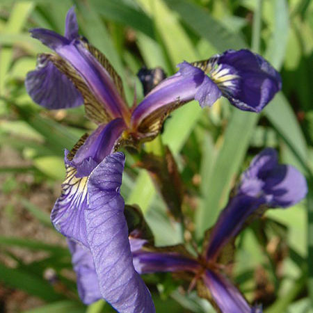
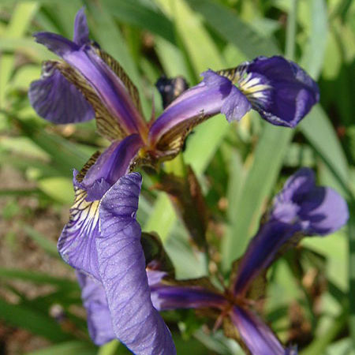
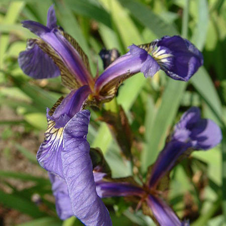

If you're not an expert in machine learning, it's normal to feel overwhelmed by the sheer number of different machine learning approachs that can be taken to any given problem. These different techniques - often called algorithms - each have different pros and cons that allow them to work well for some tasks and but mean they may perform poorly on others.
We're going to look in detail at three particularly common algorithms and use visualization to understand thier core properties. To do this, we'll be using a dataset known as the Iris dataset. It is a simple table of observations of for 3 different species of irises.

If you saw a new picture of an iris, could you say which of these three species it belongs to? That might be hard to do! In machine learning this challenge is known as classification, that is, trying to decide which group a new example belongs to based on it's features. In this case, for each flower in the database, we have measurements of the petal and sepal (green part that supports the petal) and also which species the flower belongs to. Here are three rows directly from the Iris dataset:
Record ID
Sepal Length (cm)
Sepal Width (cm)
Petal Length (cm)
Petal Width (cm)
Flower Type
1
5.1
3.5
1.4
0.2
Iris vetosa
2
7.0
3.2
4.7
1.4
Iris versicolor
3
6.3
3.3
6.0
2.5
Iris virginica
Now can you guess what flower this is?
Record ID
Sepal Length (cm)
Sepal Width (cm)
Petal Length (cm)
Petal Width (cm)
Flower Type
4
5.7
3.8
1.7
0.3
??????????
It's Iris setosa! Whether you got it right or not, imagine you had a thousand or even a million of these records that you needed to label this same way. The whole Iris dataset is only 150 rows, but even at that number we'd be cringing. Luckily, as you may have guessed, this task is perfect for machine learning algorithms!
So back to the plethora of algorithms that might help us with our flower classification task, we can make things easier by dividing all of them up into two categories:
These algorithms make use of prior data to label new data. So we give them some flower records with known labels (in this case the species) and based on that, the algorithm predicts the proper label for new unlabeled flower records.
Unsupervised learning algorithms - (e.g. k-means)
The big difference for these algorithms is that they don't rely on known examples to label new ones. Instead, they look for patterns in the observations and try to cluster the observations into groups based on these patterns. We don't need to know in advance what those groups are.
Now you're ready to dig a little deeper! Click one of the algorithms below to explore a specific algorithm in-depth.
 
